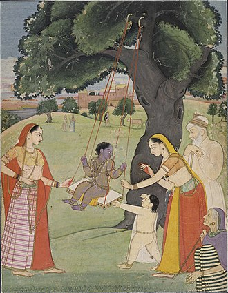

In the Krishna Charitas, Krishna is born to Devaki and her husband, Vasudeva, of the Yadava clan in Mathura. Devaki's brother is a tyrant named Kamsa. At Devaki's wedding, according to Puranic legends, Kamsa is told by fortune tellers that a child of Devaki would kill him. Sometimes, it is depicted as an akashvani announcing Kamsa's death. Kamsa arranges to kill all of Devaki's children. When Krishna is born, Vasudeva secretly carries the infant Krishna away across the Yamuna, and exchanges him with Yashoda's daughter. When Kamsa tries to kill the newborn, the exchanged baby appears as the Hindu goddess Yogamaya, warning him that his death has arrived in his kingdom, and then disappears, according to the legends in the Puranas. Krishna grows up with Nanda and his wife, Yashoda, near modern-day Mathura. Two of Krishna's siblings also survive, namely Balarama and Subhadra, according to these legends. The day of the birth of Krishna is celebrated as Krishna Janmashtami.
Here, I have attached a YouTube video to make it more easy for you.